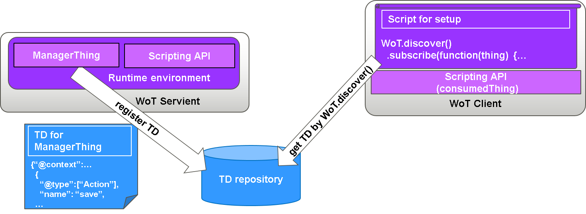
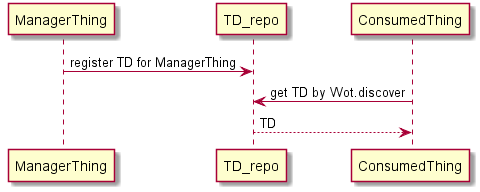
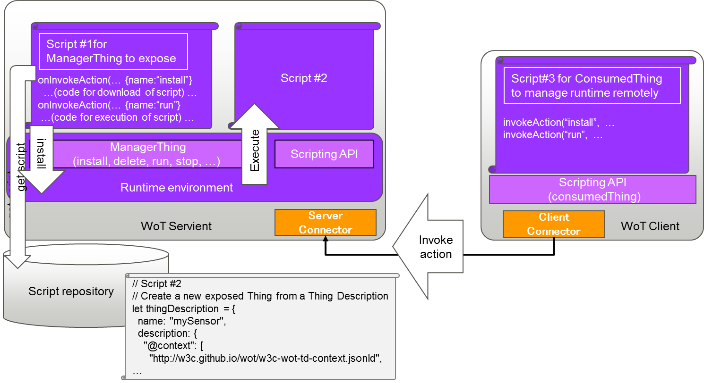
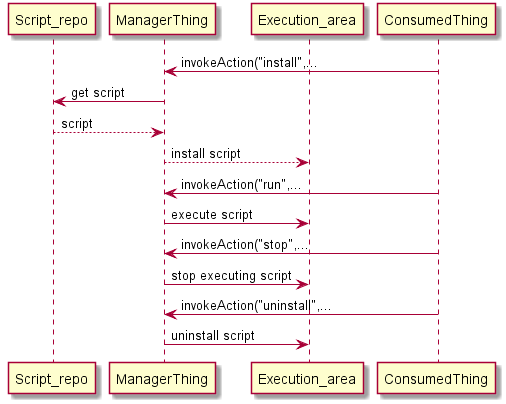

The purpose of this document is to explain ManagerThing that can deal remote Thing lifecycle management by co-working with ScriptingAPI.
ManagerThing is a capability in servient that provide management functionalities of servient and exposes management APIs to external clients.
The managerThing takes advantage of Thing Description(TD), ScriptingAPI, and wot security-privacy.
TD for ManagerThing declares fixed management commands as actions that a servient supports.
A Client that supports Scripting API(ConsumedThing) obtains the TD and knows what management capabilities are available. Then the Client issue commands to control the servient remotely.
ManagerThing provides the following managemet commands.
The following commands deals life cycle of script.
The script may include Scripting API commands.
A sample TD for ManagerThing is as follows:
{"@context": ["http://w3c.github.io/wot/w3c-wot-td-context.jsonld",{"manager": "http://w3c.github.io/wot/managerthing#" }],"@type": ["ManagerThing"],"name": "ManagerThing","interaction": [{"@type": ["Action","manager:install"],"name": "install","inputData": {"type": "string" },"outputData": {"type": "string" },"link": [{"href" : "coap://mytemp.example.com:5683/install","mediaType": "application/json"}]},{"@type": ["Action","manager:run"],"name": "run","inputData": {"type": "string" },"link": [{"href" : "coap://mytemp.example.com:5683/run","mediaType": "application/json"}]},{"@type": ["Action","manager:stop"],"name": "stop","inputData": {"type": "string" },"link": [{"href" : "coap://mytemp.example.com:5683/stop","mediaType": "application/json"}]},{"@type": ["Action","manager:uninstall"],"name": "uninstall","inputData": {"type": "string" },"link": [{"href" : "coap://mytemp.example.com:5683/uninstall","mediaType": "application/json"}]}]}
The ManagerThing can be described in WebIDL as follows.
typedef ScriptID USVString; // e.g. UUIDinterface ScriptManagerThing {// main actionsany run(USVString script); // run a serialized script and return the result or errorScriptID? install(USVString script, optional unsigned long bootSequence); // savebool uninstall(ScriptID handle); // uninstall a script by handle (stop, unmark, delete)bool stop(ScriptID handle); // stop a running script by handle};
Servient supports fixed management command that declared as TD for ManagerThing. The servient exposes API and is controlled by external client through the TD. Client has a program that issues WoT.discover() command to obtain the TD.

The following diagram depicts how ManagerThing preapard to use.

The external client manages a servient remotely using Scripting API(ConsumedThing).

The script of left hand side (Script#1) shows the part of ManagerThing program to manage servient and the APIs are exposed.
The script of the middle (Script#2) shows a script from a Script repository.
The script of right hand side (Script#3) shows a sript for ConsumedThing to manage the servient remotely.
The following diagram depicts how ManagerThing works based on the usage of a script installation. 
...